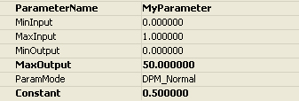
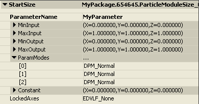

UDN
Search public documentation:
DistributionsJP
English Translation
中国翻译
한국어
Interested in the Unreal Engine?
Visit the Unreal Technology site.
Looking for jobs and company info?
Check out the Epic games site.
Questions about support via UDN?
Contact the UDN Staff
中国翻译
한국어
Interested in the Unreal Engine?
Visit the Unreal Technology site.
Looking for jobs and company info?
Check out the Epic games site.
Questions about support via UDN?
Contact the UDN Staff
UE3 ホーム > パーティクルとエフェクト > パーティクルシステム > Distributions (ディストリビューション)
UE3 ホーム > FX アーティスト > Distributions (ディストリビューション)
UE3 ホーム > FX アーティスト > Distributions (ディストリビューション)
Distributions (ディストリビューション)
- Distributions (ディストリビューション)
- 概要
- ディストリビューション タイプ
- Float ディストリビューション
- DistributionFloatConstant (ディストリビューション 浮動小数定数定数)
- DistributionFloatConstantCurve (ディストリビューション 浮動小数定数定数カーブ)
- DistributionFloatUniform (ディストリビューション 浮動小数定数 浮動小数定数)
- DistributionFloatUniformCurve (ディストリビューション 浮動小数定数一定カーブ)
- DistributionFloatParticleParam (ディストリビューション 浮動小数定数 パーティクル パラメータ)
- DistributionFloatSoundParameter (ディストリビューション 浮動小数定数 サウンド パラメータ)
- Vector Distributions (ベクトル ディストリビューション)
- Float ディストリビューション
概要
ディストリビューション タイプ
Float ディストリビューション
DistributionFloatConstant (ディストリビューション 浮動小数定数定数)
このタイプは、定数であるプロパティの値を提供するために使用されます。 これをタイプとして選択すると、次のダイアログが値の編集用に提供されます。:DistributionFloatConstantCurve (ディストリビューション 浮動小数定数定数カーブ)
このタイプは、時間経過とともにグラフ エディタ上にプロットされるプロパティの値を提供するために使用します。時間が絶対 (エミッタのライフタイム) であるか、相対 (個々のパーティクルのライフタイム) であるかは、ディストリビューションを利用するモジュールによります。 これをタイプとして選択すると、次のダイアログが値の編集用に提供されます。: すべてのフィールドは手動で編集することができますが、これらの値の編集には、カーブ エディタ ウィンドウの利用をお勧めします。
すべてのフィールドは手動で編集することができますが、これらの値の編集には、カーブ エディタ ウィンドウの利用をお勧めします。
DistributionFloatUniform (ディストリビューション 浮動小数定数 浮動小数定数)
このタイプは、プロパティの値の範囲を提供するために使用します。値が評価されると、返された値は、選択した範囲内にランダムに設定されます。 これをタイプとして選択すると、次のダイアログが、値を編集するために提供されます。
DistributionFloatUniformCurve (ディストリビューション 浮動小数定数一定カーブ)
このタイプは、時間経過とともにグラフ エディタ上にプロットされるプロパティの値の範囲を提供するために使用します。 これをタイプとして選択すると、次のダイアログが、値を編集するために提供されます。 ConstantCurve タイプと同様に、このディストリビューション タイプもカーブ エディタによって編集することをお勧めします。
ConstantCurve タイプと同様に、このディストリビューション タイプもカーブ エディタによって編集することをお勧めします。
DistributionFloatParticleParam (ディストリビューション 浮動小数定数 パーティクル パラメータ)
このタイプは、エミッタ用のパラメータの単純なゲームコードの設定を可能にするために使用されます。これにより、一つの範囲から別の範囲へ入力値をマップする能力が提供され、ゲームプレー コードを更新する必要なしに "Cascade-space" (カスケードスペース) でパラメータの微調整ができます。確立した入力範囲がゲームプレー コーダーによって決定すると、アーティストは、出力マッピングによってプロパティを自由に調整できます。 これをタイプとして選択すると、次のダイアログが、値を編集するために提供されます。:
ParameterName (パラメータ名) は、スクリプトコードがパラメータにアクセスするときに使用する名前です。 MinInput (最小入力) および MaxInput (最大入力) は、通常ゲームコードによって、パラメータに渡すことができる値の範囲です。 MinOutput (最小出力) および MaxOutput (最大出力) は、パーティクル システムにおいてパラメータに適用する値です。 ParamMode (パラメータモード) により、入力値を使用する方法が決まります。次のフラグがサポートされています。:| パラメータモード フラグ | 説明 |
|---|---|
| DPM_Normal | 入力値のみを残す。 |
| DPM_Direct | 入力値を直接に使用する(再マッピングなし)。 |
| DPM_Absolute | 再マッピングの前の入力値の絶対値を使用する。 |
ParticleComponent->SetFloatParameter('MyParameter', CurrentParameter);
DistributionFloatSoundParameter (ディストリビューション 浮動小数定数 サウンド パラメータ)
このタイプは、SoundCue を除くと、DistributionFloatParticleParam と同様です。これは、SoundCue のプロパティをコードから修正するために使用します。例えば、高音で生じるエンジン ノイズを望む場合は、そのノイズ用に SoundCue を作成し、SoundNodeModulatorContinuous (サウンドノードモジュレータ継続) ノードを追加します。次に、PitchModulation (高音変) プロパティに、DistributionFloatSoundParameter を使用します。Vector Distributions (ベクトル ディストリビューション)
Vector ディストリビューションは、アーティスト制御のベクトルベースのプロパティがある時に使用されます。例としては、パーティクルのサイズや速度があります。DistributionVectorConstant (ディストリビューション ベクトル定数)
このタイプは、定数であるプロパティの値を提供するために使用されます。 これをタイプとして選択すると、次のダイアログが、値を編集するために提供されます。: LockedAxes フラグによって、ユーザーは、一つの軸の値を他の軸の値に対してロックすることができます。次のフラグがサポートされています。:
LockedAxes フラグによって、ユーザーは、一つの軸の値を他の軸の値に対してロックすることができます。次のフラグがサポートされています。:
| LockedAxes フラグ | 説明 |
|---|---|
| EDVLF_None | どの軸も他の軸に対してロックされません。 |
| EDVLF_XY | Y 軸が、X 軸の値に対してロックされます。 |
| EDVLF_XZ | Z 軸が、X 軸の値に対してロックされます。 |
| EDVLF_YZ | Z 軸が、Y 軸の値に対してロックされます。 |
| EDVLF_XYZ | Y 軸および Z 軸が、X 軸の値に対してロックされます。 |
DistributionVectorConstantCurve (ディストリビューション ベクトル定数カーブ)
このタイプは、時間経過とともにグラフ エディタ上でプロットされるプロパティの値を提供するために使用します。時間が、絶対 (エミッタのライフタイム) であるか、相対 (個々のパーティクルのライフタイム) であるかは、ディストリビューションを利用するモジュールによります。 これをタイプとして選択した場合、次のダイアログが、値を編集するために提供されます。 FloatConstantCurve タイプと同様に、このディストリビューション タイプは、カーブ エディタにより編集することをお勧めします。
注：ConstantCurve ディストリビューションに対して、LockedAxes フラグを EDVLF_None 以外の何かに設定した場合、カーブ エディタは、混乱を避けるためにロックされた軸を表示しません。例えば、フラグを EDVLF_XY に設定した場合、カーブ エディタは、X および Z カーブのみを含みます。
FloatConstantCurve タイプと同様に、このディストリビューション タイプは、カーブ エディタにより編集することをお勧めします。
注：ConstantCurve ディストリビューションに対して、LockedAxes フラグを EDVLF_None 以外の何かに設定した場合、カーブ エディタは、混乱を避けるためにロックされた軸を表示しません。例えば、フラグを EDVLF_XY に設定した場合、カーブ エディタは、X および Z カーブのみを含みます。
DistributionVectorUniform (ディストリビューション ベクトル 浮動小数定数)
このタイプは、プロパティの値の範囲を提供するために使用します。値を評価すると、返された値は、選択した範囲内にランダムに設定されます。 これをタイプとして選択すると、次のダイアログが、値を編集するために提供されます。: bUseExtremes (極値を使用) フラグは、値を最小または最大として選択し、2 つの極値のうちの一つにクランプする必要があることを示します。
MirrorFlags (ミラーフラグ) によって、値の各コンポーネントの最小/最大値をミラーリングすることができます。次のフラグが、ミラーリングをサポートします。
bUseExtremes (極値を使用) フラグは、値を最小または最大として選択し、2 つの極値のうちの一つにクランプする必要があることを示します。
MirrorFlags (ミラーフラグ) によって、値の各コンポーネントの最小/最大値をミラーリングすることができます。次のフラグが、ミラーリングをサポートします。
| ミラーフラグ | 説明 |
|---|---|
| EDVMF_Same | 最小値として最大値を使用する。 |
| EDVMF_Different | 各値をセットとして使用する。 |
| EDVMF_Mirror | 最小値として?最大値を使用する。 |
DistributionVectorUniformCurve (ディストリビューション ベクトル 浮動小数定数 カーブ)
このタイプは、時間経過とともにグラフ エディタ上でプロットされるプロパティの値の範囲を提供するために使用します。 これをタイプとして選択すると、次のダイアログが、値を編集するために提供されます。: 他のカーブ タイプと同様に、このディストリビューション タイプも、カーブ エディタによって編集することをお勧めします。
他のカーブ タイプと同様に、このディストリビューション タイプも、カーブ エディタによって編集することをお勧めします。
DistributionVectorParticleParam (ディストリビューション ベクトル パーティクル パラメータ)
このタイプは、前述の FloatParticleParam タイプのベクトル相当です。 これをタイプとして選択すると、次のダイアログが、値を編集するために提供されます。: